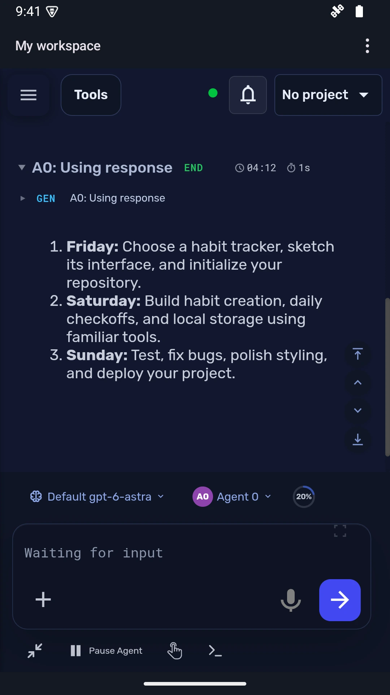
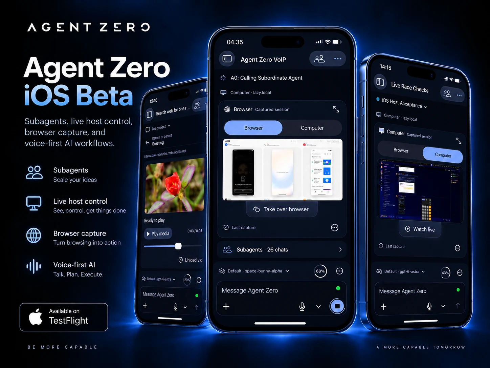
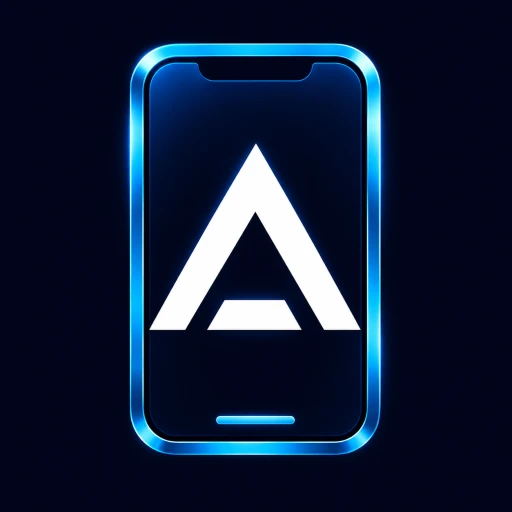

Install the app
Open the downloaded AgentZero.apk. If Android asks, allow installation from the browser or file app you’re using, then tap Install. You can turn that permission off afterward.
Bring your Agent Zero workspace to Android. Chat, open your tools, and work with files on the server you already use.
Download for Android Already installed? Open appOn iPhone or iPad? Join the iOS public beta ↗
Public beta · Free · Android 8.0+ · Version 0.1.6
Direct APK download. Install directly—no app store account needed.

Installed the app? Open it, review this address, and tap Connect. Sign in on your server’s page if asked.
Open the downloaded AgentZero.apk. If Android asks, allow installation from the browser or file app you’re using, then tap Install. You can turn that permission off afterward.
Follow your WebUI’s Open in Android link, or choose Scan QR code in the app and scan your WebUI’s connection code. You can also enter the HTTPS address yourself.
Review the full server address, tap Connect, and sign in. Your chats, files, and tools are provided by your own Agent Zero server.
Your Agent Zero workspace, built for iOS. Join the public beta through TestFlight.


Install the Mobile Apps plugin to put these Android and iOS links in your sidebar. It includes QR codes for Android setup and stays in your persistent plugin directory during server updates.
Open Plugins → Install → Git URL and paste:
https://github.com/TerminallyLazy/a0-mobile-appsAn Agent Zero server with a trusted HTTPS certificate is required. Use Remote Control in the WebUI if you need a phone-accessible HTTPS address. Keep Android System WebView up to date.
Microphone and camera access are optional. QR scanning works on the device; you can also choose a saved QR image. Voice availability depends on your server and Android audio setup.
Download the newest APK from this page and install it over this version. Keep the installed app to retain its saved connections. The earlier debug preview is a separate app.